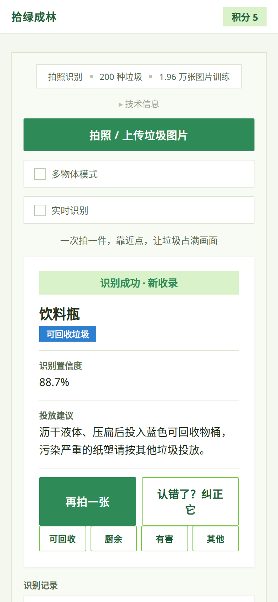
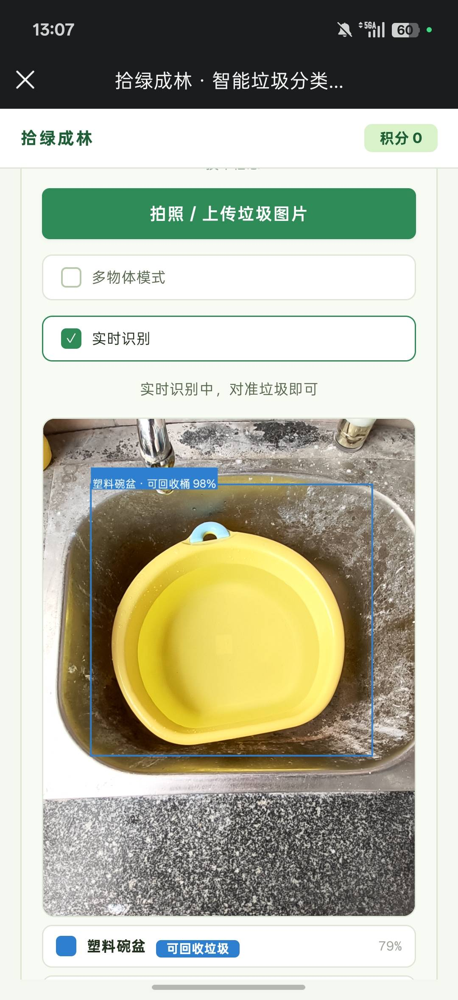

智能垃圾分类识别与低碳科普系统
一款可以直接在手机浏览器打开的垃圾分类科普工具。AI模型在手机本地运行，没有网络也可以正常使用，不需要后台服务器支持
打开应用：https://shilvchenglin.pages.dev
垃圾分类的宣传已经开展很久，学校课堂也经常科普相关知识。但实际扔垃圾的时候，很多人依旧会犯难：像奶茶杯这类日常物品，到底归到哪一类。
部分人不是不了解垃圾分类四大类别，而是面对一件件真实的生活物品，很难快速对应上分类规则。记住理论概念，不等于可以准确判断现实里各式各样的垃圾。
市面上已经有不少垃圾分类识别小程序。但大部分工具需要把拍摄的照片上传到服务器处理，存在隐私顾虑；垃圾房、地下车库这类场景网络信号差，很多联网工具就无法正常工作。为此我们设计了新的方案来解决这个问题。
这个应用把AI模型随网页下载到用户手机，识别计算全部在本机完成。拍摄的图片不会上传到外部服务器，避免隐私泄露；同时不依赖网络，就算信号不好，在垃圾房、地下车库也可以正常使用。
系统随机点名一种垃圾，让人去现实里找到它、拍照、识别，认对了才算通过。这一条同时也是效果检验：练习里记住的分类，到了真实场景还认不认得出，看前后正确率的对比就知道。
应用面向学生群体。如果每次扔垃圾都要打开应用查一遍，它就只是个查询工具，关掉之后什么也留不下。所以做了练习、图鉴和挑战赛：让人们在反复使用中把分类记牢，练到不用查也能分对。
先用YOLOv8n找出图片中物体的位置，把物体裁剪出来；再交给MobileNetV3‑Small完成200个细垃圾类别的判断。直接对整张图片识别容易被背景干扰，先定位再分类，能减少背景带来的误判。
工程上有三处花了比较多时间。


图 1 为应用内截图，图 2 为手机真机实时识别实拍。
| 项目名称 | 拾绿成林 · 智能垃圾分类识别与低碳科普系统 |
|---|---|
| 技术栈 | 原生 HTML / CSS / JavaScript + ONNX Runtime Web |
| 核心模型 | YOLOv8n做目标检测，MobileNetV3‑Small负责200类垃圾细分类 |
| 数据来源 | HuggingFace公开中文垃圾分类数据集 |
| 模型准确率 | 一级四类准确率 88.5 %；细类 top-1 准确率 66.4 % |
拾绿成林 · 项目简介 ｜ 2026